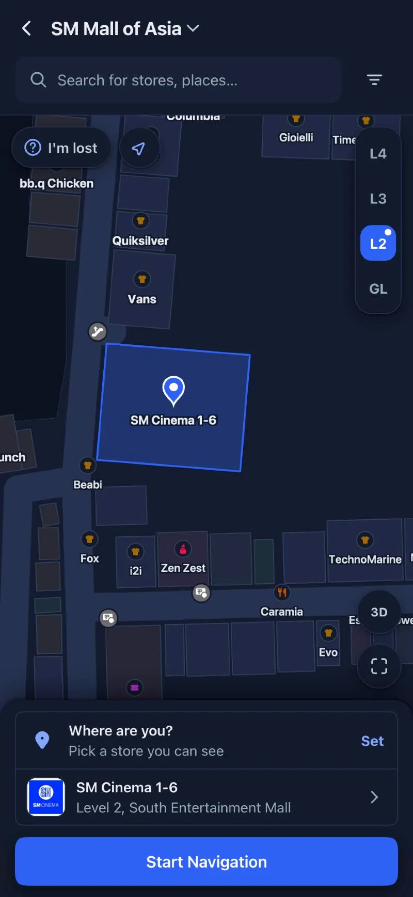
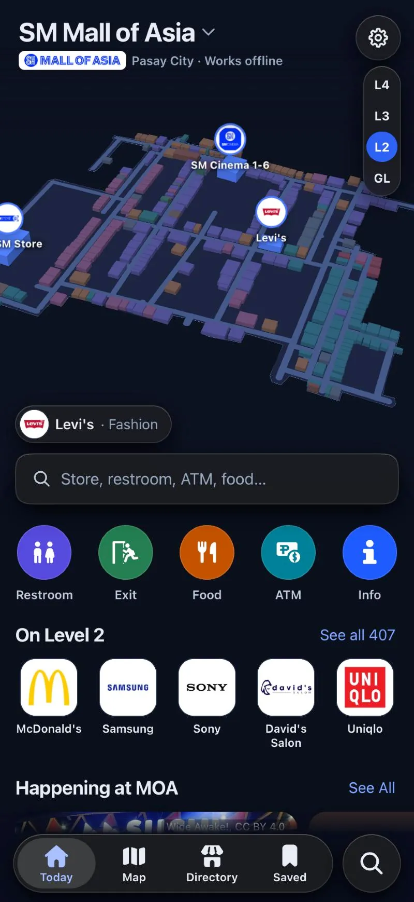
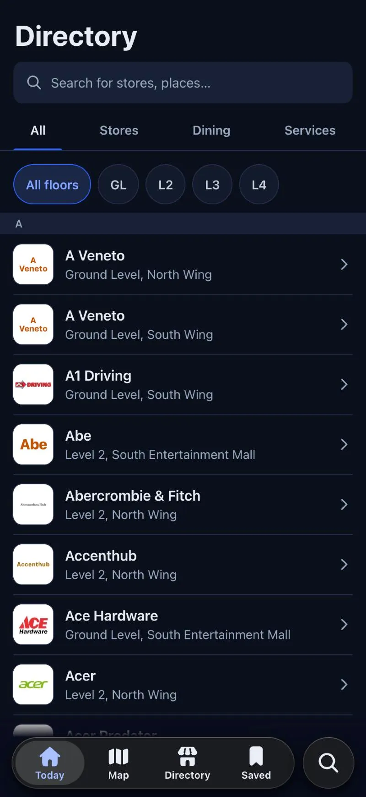
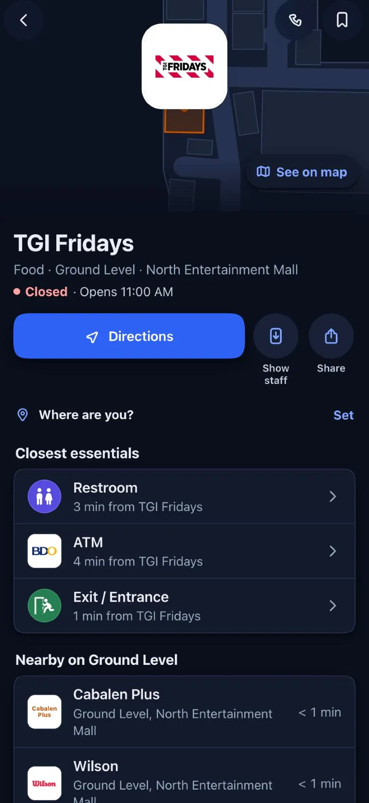

Case study · Mall Maps PH
A mall map that works offline.
Mall Maps PH is an indoor map for Philippine malls. It runs in the browser, needs no login, and keeps working with no signal. I designed and built it, and it’s piloted at SM Mall of Asia.



- ~900places to search at SM Mall of Asia
- 430brands shown with their real logo
- 1.6 sto a usable Home on a first visit
- 6more Metro Manila malls in a private preview
The problem
Big malls, no usable map.
Philippine malls are huge, and shoppers get lost in them. You know the store is somewhere on Level 2, but not which wing, or which way to walk.
Mall apps and websites rarely have a map you can actually use on a phone. So I built one: a map that opens fast, finds the store, and walks you there.
What I built
Mall Maps PH, piloted at SM Mall of Asia.
An offline, no-login indoor map web app. You can install it from the browser like an app, and an iPhone app built with Capacitor is planned.
01 · The map
A 3D map of every floor.
Each floor is drawn in 3D on the phone’s graphics chip, with MapLibre. The biggest stores are lit so you can get your bearings, and stores sit on the map as their real logos.
- Biggest stores lit, real store logos as pins
- Nearest restroom, exit, ATM, food and info desk in one tap
02 · Directions
Directions that point at things you can see.
Turn-by-turn walking directions use landmarks, like walk toward Uniqlo
. When a route changes floors, the floors stack up in 3D so you can see where you go up or down.
- Routes across floors, shown as stacked 3D floors
- Location comes from the phone’s own prompt, with no fake “blue dot” precision

03 · Store pages
Every store, with what’s near it.
Each store shows whether it’s open now, its hours, and the closest restroom, ATM and exit. Store data is checked for freshness against OpenStreetMap and public sources, and each store carries a quiet “Last checked” line.
- Open and closed hours
- Closest essentials from every store
- A “Last checked” line on each store
04 · Search and directory
About 900 places, one search box.
Search covers about 900 places at MOA: stores, food, restrooms and ATMs. The A–Z directory lists every store with its real logo, 430 brands in all.
- Filter by floor, or by stores, dining and services
- Every store with its real logo
Behind the build
Made for a phone, inside a mall.
Signal inside a mall is often weak, and nobody should need an account to find a restroom. These are the parts that make it work there.
Open Mall Maps PH-
Works fully offline
After the first visit, the whole mall is saved to the phone. The map, search and directions keep working with no signal.
Workbox · installable web app -
Fast on mobile data
Home is usable in about 1.6 seconds on a first visit.
Preact · Vite -
No login
Open the link and use it. There’s no account and nothing to sign up for.
Web app · iPhone app via Capacitor planned -
Honest about location
It asks with the phone’s own location prompt, and never shows a blue dot more precise than it really is.
The phone’s own location prompt -
Store data that stays fresh
Stores are checked against OpenStreetMap and public sources, and each one says when it was last checked.
OpenStreetMap · public sources -
New malls, mapped by a tool
A tool I wrote builds the map for a new mall automatically from OpenStreetMap.
OpenStreetMap · MapLibre GL
Next malls
Six more Metro Manila malls are mapped and in a private preview.
- SM Megamall
- SM City Manila
- Robinsons Place Manila
- Ayala Malls Manila Bay
- SM Southmall
- SM City Sta. Mesa
Built with
- Preact
- TypeScript
- Vite
- MapLibre GL
- Workbox (offline)
- Capacitor
- Cloudflare
Hosted on Cloudflare.
Want an app like this for your business?
Describe it in your own words. You’ll get questions or a first plan back within one business day.
Mall Maps PH is an independent guide, not affiliated with SM, Ayala or Robinsons.